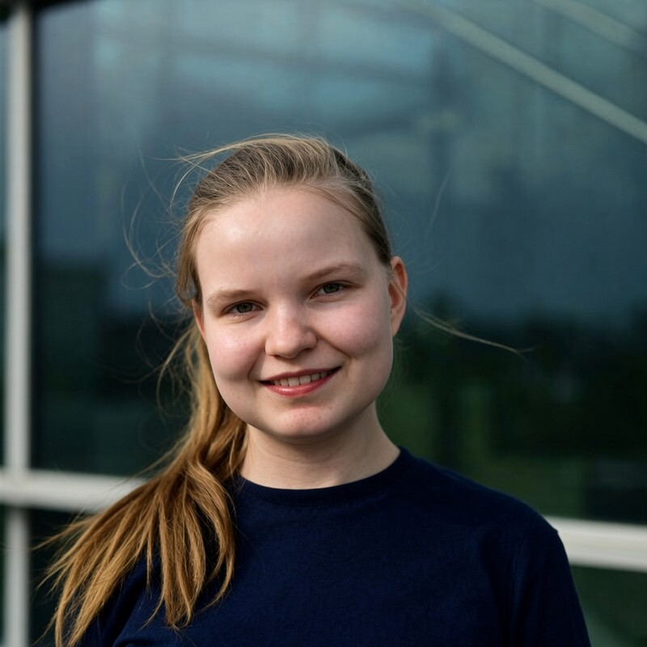

Meeri Kuoppala
Tutkimuspäällikkö · Research Manager, ERA (Cambridge)

Olen tutkimuspäällikkö tekoälyturvallisuusorganisaatio ERAssa Cambridgessa ja teen matematiikan maisteriopintoja Helsingin yliopistossa. Kirjoitan kehittyneen tekoälyn riskeistä ja niihin vastaamisesta kansainvälisellä sääntelyllä.
In English: I am a Research Manager at ERA, an AI safety organisation in Cambridge, and a mathematics graduate student at the University of Helsinki. I write about risks from advanced AI and the international governance needed to address them.
Yhteydenotot / Contact:
meeri.kuoppala@gmail.com